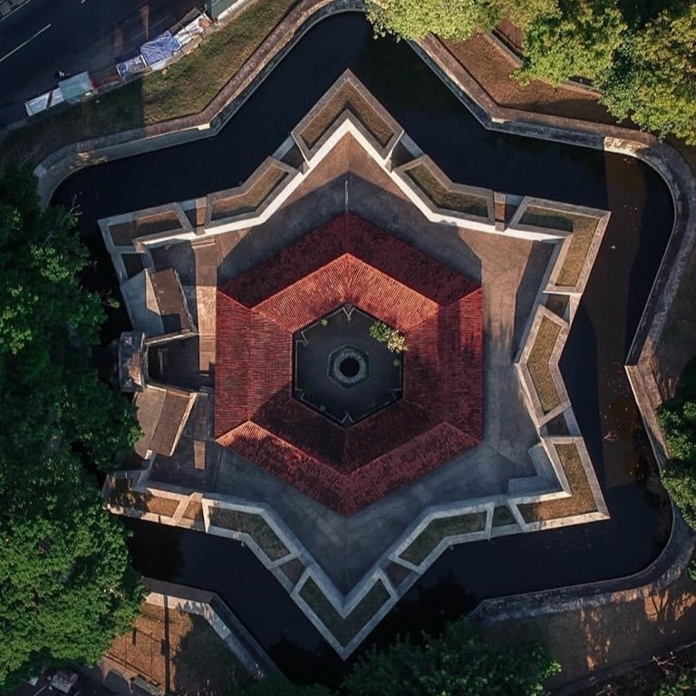

Matara
Matara is a busy, booming and sprawling commercial town that owes almost nothing to tourism – which can make it a fascinating window on modern Sri Lankan life. Matara’s main attractions are its ramparts, Dutch architecture, a well-preserved fort and its street life.

Mirissa
With a coastline as long as 1,585 KM, this island country does not fall short of beaches. Sri Lanka’s Mirissa Beach is a must-visit with its serene blue waters, relaxful beach ambiance, exciting nightlife and adventurous water activities. Mirissa is a small town in the south coast of the country and is 150 KM away from the capital, Colombo. When one wishes to spend a flamboyant and colorful vacation against the breezy winds of the beach with mouth-watering delicacies and exuberant resorts to stay in, Mirissa Beach should definitely be on that list when coming to Sri Lanka.
Weligama
Weligama is a town on the south coast of Sri Lanka, located in Matara District, Southern Province, Sri Lanka, governed by an Urban Council. The name Weligama, literally means "sandy village" which refers to the area's sandy sweep bay. It is approximately 144 kilometres (89 mi) south of Colombo and is situated at an elevation of 9 metres (30 ft) above the sea level.
Weherahena Temple
Weherahena ( Veherahena) is popular temple among the buddhist pilgrims. Although there is nothing of historical significance, the story of the temple is quite interesting. In addition, the temple is said be the largest and the first tunnel temple in the world.

Star fort, Matara
Star fort, Matara, in Matara City, Sri Lanka, the approximate distance from the entrance to Matara Fort is 350 meters. A fort situated on the banks of the East Nilwala River. Established by the Dutch in the year 1765, this fort was originally named "R' Dut One Ek".
Hiriketiya Beach
Hiriketiya beach, popularly known as Hiri beach, is near Dickwella town, 20 minutes from Tangalle in Hambantota district, on the southern coast of Sri Lanka. Hiriketiya beach is a recently discovered cove, with soft, pale yellow sand along sparkling blue water. The circumference of the bay typically has tall, skinny palm trees. Although away from the main road, this beach is quite a busy one. The waves of the bay are gentle and safe. A rocky mouth guards the bay.
Wewurukannala
Wewurukannala viharaya is most famous for a gargantuan seated Buddha waiting to greet devout pilgrims, but the temple’s most wonderfully unexpected (and unsettling) feature lies somewhere along the way.
Parey Dewa
Parey Dewa (Rock in Water) or Paravi Dupatha temple is a relatively modern Buddhist temple on Pigeon Island (a small offshore island) in front of the city. It is reached by an elegant cable-stayed footbridge, which was erected in 2008 (replacing an earlier bridge, which was washed away in the 2004 tsunami). The temple is set in attractive gardens and houses numerous statues of Buddha and a replica of the alleged footprint found on Adam's Peak.
Dondra Head Lighthouse
Dondra is a settlement on the extreme southernmost tip of Sri Lanka, in the Indian Ocean near Matara, Southern Province, Sri Lanka. The Dondra Head Lighthouse, ruins of several Hindu shrines of Tenavaram and a Vihara (Buddhist temple) are located in the vicinity.
Matara Fort
The Matara Fort was built in 1560 by the Portuguese and was substantially re-built by the Dutch in 1640, following the capture of Galle. The fort, which consists of a large stone rampart, occupies the promontory, which separates the Niwala Ganga (River) lagoon and the ocean
Polhena Beach
Polhena Beach is one of the safest beaches in Sri Lanka with waist-high water and coral reefs. Swimming here is like swimming in a swimming pool but with an extraordinary aquatic life such a numerous giant green turtles, and fish which makes one’s dive even more memorable.